DDE-BIFTOOL demo 1 - Neuron, simplification using utilities
(c) DDE-BIFTOOL v. 3.1.1(75), 31/12/2014
This demo repeats the illustrative example using the convenience functions in ddebiftool_utilities. The system of delay differential equations is [Shay,99] again
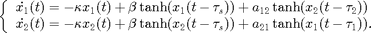
This system models two coupled neurons with time delayed connections. It has two components (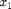 and 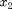), three delays (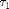, 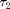 and 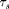), and four other parameters (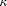, 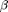, 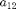 and 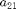).
The demo will show (with fewer explanations than demo1_funcs.html and its follow-on files)
- continuation of equilibria in ,
- computation of their stability (eigenvalues of linearization),
- continuation of Hopf bifurcations in and ,
- branching off from a Hopf bifurcation to continue a family of periodic orbits in ,
- computation of stability of periodic orbits (Floquet multipliers of linearization),
- continuation of folds of periodic orbits in and
Contents
- Additional Folder for Path
- Definition of right-hand side
- Steady state branches
- Stability along branch
- Hopf continuation
- Figure: Continuation (predictions and corrections) of Hopf bifurcation
- Linear stability along Hopf curve
- Switch to second Hopf curve near double Hopf point
- Figure: Continuation (predictions and corrections) of both Hopf bifurcations
- First Lyapunov coefficient L1 along both Hopf curves
- Determine normal form of double Hopf point
- Two-parameter bifurcation diagram of Hopf bifurcations
- Periodic orbit continuation
- Figure: family of periodic orbits
- Floquet multipliers of periodic orbits
- Continuation of folds of periodic orbits
- Add fold of periodic orbits to Two-parameter bifurcation diagram
- save data:
Additional Folder for Path
The utility functions are stored in a separate folder, which has to be loaded in addition to ddebiftool. We also include the folders for periodic orbits and for normal form functions.
addpath('../../ddebiftool/',... '../../ddebiftool_extra_psol/',... '../../ddebiftool_utilities/',... '../../ddebiftool_extra_nmfm/'); clear; close all %#ok<*ASGLU,*NOPTS,*NASGU>
Definition of right-hand side
This time we vectorize the right-hand side in xx, but do not specify the derivatives analytically, relying on df_deriv. See demo1_funcs.html for details. The parameter vector has the order 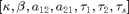.
neuron_sys_rhs=@(xx,par)[... -par(1)*xx(1,1,:)+par(2)*tanh(xx(1,4,:))+par(3)*tanh(xx(2,3,:));.... -par(1)*xx(2,1,:)+par(2)*tanh(xx(2,4,:))+par(4)*tanh(xx(1,2,:))]; funcs=set_funcs(... 'sys_rhs',neuron_sys_rhs,... 'sys_tau',@()[5,6,7],... 'x_vectorized',true); ind_a21=4; % used later for continuation ind_taus=7; % used later for continuation % general continuation parameters, kept in a cell list parbd={'min_bound',[ind_a21,0],'max_bound',[ind_a21,4; ind_taus,10],... 'max_step',[ind_a21,0.2; ind_taus,0.5]};
Steady state branches
The convenience function SetupStst can be used to define the initial piece of a steady-state branch. Its first arguments is funcs, the others are name-value pairs. Important parameters:
- 'parameter': row vector of initial parameters
- 'x': column vector of initial equilibrium
- 'contpar': index of continuation parameter (or vector of indices)
- 'step': initial step along branch (default 0.01)
All other name-value pairs are appended as fields to the structures in branch1 if their names match. Of course, the branch structure can also be manipulated manually afterwards. The subsequent continuation extends the branch in both directions up to the boundaries min_bound and max_bound.
[branch1,suc]=SetupStst(funcs,... 'parameter',[1/2, -1, 1, 2.34, 0.2, 0.2, 1.5],'x',[0;0],... 'contpar',ind_a21,'step',0.1,parbd{:}); branch1.method.continuation.plot=0; % don't plot prgress [branch1,s,f,r]=br_contn(funcs,branch1,100); branch1=br_rvers(branch1); [branch1,s,f,r]=br_contn(funcs,branch1,100)
BR_CONTN warning: boundary hit.
BR_CONTN warning: boundary hit.
branch1 =
method: [1x1 struct]
parameter: [1x1 struct]
point: [1x24 struct]
s =
14
f =
0
r =
0
Stability along branch
The convenience function GetStability recomputes the eigenvalues if not yet present and returns as its first output nunst the number of unstable eigenvalues for bifurcation detection. Its first argument is the branch structure for which stability information is required. We find the first point at which the number of unstable eigenvalues changes by 2.
branch1.method.stability.minimal_real_part=-2;
nunst=GetStability(branch1,'funcs',funcs);
indhopf=find(abs(diff(nunst))==2)
indhopf =
19
Hopf continuation
Similar to SetupStst the convenience function SetupHopf creates the initial Hopf branch. Its first arguments are funcs, the branch along which the Hopf bifurcation was detected (here branch1), and the index of the point near which the Hopf bifurcation was detected. Important parameters:
- 'contpar': bifurcation parameters (vector of length >=2)
- 'dir': index of parameter, which is varied at initial step. The default is [], which means that only one point on the branch is computed. This is useful if one wants to correct only a single Hopf point.
- 'step': initial step along branch (default 1e-3)
- 'excudefreqs': list of frequencies that should be excluded (default []). The initial guess for the Hopf frequency is the complex conjugate pair closest to the imaginary axis, after one takes away a pair of eigenvalues for each frequency listed in excludefreqs.
All other name-value pairs can be used to replace fields in the structures of the Hopf branch. Otherwise, the output branch2 inherits all values from the input branch. The subsequent continuation extends the branch in both directions up to the boundaries min_bound and max_bound.
[branch2,suc]=SetupHopf(funcs,branch1,indhopf,'contpar',[ind_a21,ind_taus],... 'dir',ind_taus,'step',0.1,'plot',1,parbd{:}); figure(1); clf; [branch2,s,f,r]=br_contn(funcs,branch2,40); branch2=br_rvers(branch2); [branch2,s,f,r]=br_contn(funcs,branch2,20); xlabel('a21');ylabel('\tau_s');
BR_CONTN warning: boundary hit. BR_CONTN warning: boundary hit.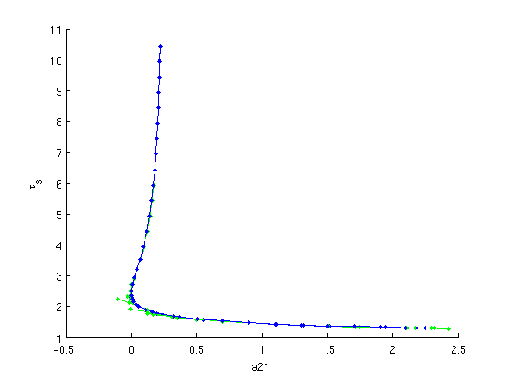
Figure: Continuation (predictions and corrections) of Hopf bifurcation
Predictions and corrections in the 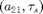-plane after computation of a first branch of Hopf bifurcations.
Linear stability along Hopf curve
The function GetStability has a few additional outputs and inputs. The optional input exclude_trivial forces exclusion of trivial eigenvalues for bifurcations (for example the pair on the imaginary axis for the Hopf bifurcation) in the count of unstable eigenvalues. The second output (here dom) contains the dominant eigenvalue (that is, the closest to the imaginary axis, excluding the trivial eigenvalues). The third output (here triv_defect) is non-empty whenever exclude_trivial is true. It contains the defect between the known trivial eigenvalue (say. 1i*point.omega for Hopf points) and the value obtained in the stability calculation. The fourth output is the modified point array, now containing stability information.
[nunst_hopf,dom_hopf,triv_defect,branch2.point]=GetStability(branch2,... 'funcs',funcs,'exclude_trivial',true); % identify Takens-Bogdanov point (Hopf frequency crosses zero): indTakens=find(diff(sign([branch2.point(:).omega]))~=0)
indTakens =
37
Switch to second Hopf curve near double Hopf point
Repeat the Hopf continuation for the point on branch2 where another eigenvalue becomes unstable, again using SetupHopf, but now using as the parameter and initial step -0.05. Initially, we turn on residual printouts.
indhopf2=find(abs(diff(nunst_hopf))~=0,1,'first'); [branch3,suc]=SetupHopf(funcs,branch2,indhopf2,'contpar',[ind_a21,ind_taus],... 'dir',ind_a21,'step',-0.05,'print_residual_info',1); branch3.method.point.print_residual_info=0; figure(1); [branch3,s,f,r]=br_contn(funcs,branch3,100); branch3=br_rvers(branch3); [branch3,s,f,r]=br_contn(funcs,branch3,100); xlabel('a21');ylabel('\tau_s');
it=1, res=0.0299965 it=2, res=0.00873529 it=3, res=4.20117e-05 it=4, res=1.54785e-08 it=5, res=8.85824e-16 it=1, res=0.0446972 it=2, res=0.00234939 it=3, res=1.40327e-05 it=4, res=5.80812e-10 it=5, res=5.55149e-16 BR_CONTN warning: boundary hit. BR_CONTN warning: boundary hit.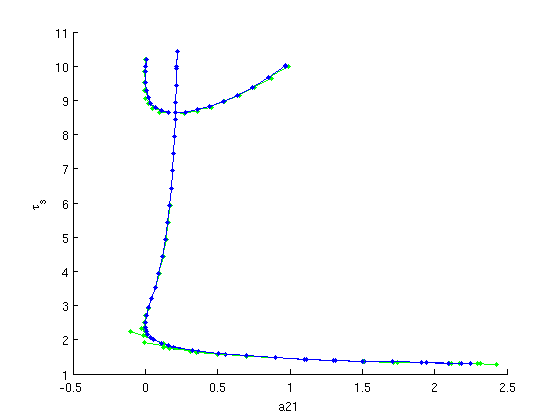
Figure: Continuation (predictions and corrections) of both Hopf bifurcations
Predictions and corrections in the -plane after computation of second branch of Hopf bifurcations (superimposed on result of first Hopf bifurcation).
First Lyapunov coefficient L1 along both Hopf curves
After a Hopf curve is computed, HopfLyapunovCoefficients returns the first Lyapunov coefficient L1, which determines if the Hopf bifurcation is supercritical (L1<0) or subcritical (L1>0). Since L1 depends on 3rd-order derivatives of sys_rhs, the default finite-difference approximation df_mfderiv is susceptible to round-off errors. Hence, HopfLyapunovCoefficients returns 2 results, the second one using a lower-order approximation. The difference between both outputs gives an error estimate. The results show that both curves are supercritical.
[L1_br2,L1low_br2]=HopfLyapunovCoefficients(funcs,branch2); [L1_br3,L1low_br3]=HopfLyapunovCoefficients(funcs,branch3); fprintf('maximal L1 along branch2: %g\n',max(L1_br2)) fprintf(' max error of L1 along branch2: %g\n',max(abs(L1_br2-L1low_br2))); fprintf('maximal L1 along branch3: %g\n',max(L1_br3)) fprintf(' max error of L1 along branch3: %g\n',max(abs(L1_br3-L1low_br3)));
maximal L1 along branch2: -0.0106291 max error of L1 along branch2: 3.73912e-07 maximal L1 along branch3: -0.00375409 max error of L1 along branch3: 5.38419e-10
Determine normal form of double Hopf point
Similar to the L1 coefficients, the normal form coefficients of a Hopf-Hopf point depend on 3rd-order derivatives of sys_rhs. Thus, the function computing the normal form returns two values, the difference of which is an error estimate. The output of HopfHopfNormalform is an entire point structure of kind 'hoho'. The field nmfm contains normal form coefficients. Other fields of interest are omega1 and omega2.
[hoho,hoho_low]=HopfHopfNormalform(funcs,branch2,indhopf2+(0:1)); fprintf(['Normal form coefficients of Hopf-Hopf point\n',... 'at (a_21,tau_s)=(%g,%g) with omega1=%g, omega2=%g:\n'],... hoho.parameter(ind_a21),hoho.parameter(ind_taus),... hoho.omega1,hoho.omega2); disp(hoho.nmfm); fprintf('Error of normal form coefficients: %g\n',... norm(struct2array(hoho.nmfm)-struct2array(hoho_low.nmfm),'inf'));
Bisection residual: res(1)=0.00376645, res(2)=-0.0026432
Bisection: new residual=0.000699409
Bisection: new residual=-0.000935621
Bisection: new residual=-0.000109275
Bisection: new residual=0.000297246
Bisection: new residual=9.45336e-05
Bisection: new residual=-7.2333e-06
Bisection: new residual=4.36845e-05
Bisection: new residual=1.82342e-05
Bisection: new residual=5.50258e-06
Normal form coefficients of Hopf-Hopf point
at (a_21,tau_s)=(0.2073,8.6345) with omega1=0.328701, omega2=0.915667:
g2100: -0.0042 - 0.0013i
g1011: -0.0091 - 0.0029i
g1110: -0.0158 + 0.0053i
g0021: -0.0086 + 0.0029i
theta: 1.0604
delta: 3.7721
Error of normal form coefficients: 1.9448e-07
Two-parameter bifurcation diagram of Hopf bifurcations
with L1 coefficients
a21_br2 =arrayfun(@(x)x.parameter(ind_a21), branch2.point); taus_br2=arrayfun(@(x)x.parameter(ind_taus),branch2.point); a21_br3 =arrayfun(@(x)x.parameter(ind_a21), branch3.point); taus_br3=arrayfun(@(x)x.parameter(ind_taus),branch3.point); figure(3); subplot(2,2,1); hold on ph_br2=plot(a21_br2,taus_br2,'.-'); ph_br3=plot(a21_br3,taus_br3,'.-','color',[0,0.5,0]); ph_hoho=plot(hoho.parameter(ind_a21),hoho.parameter(ind_taus),... 'ko','markerfacecolor','k'); lg_handles=[ph_br2,ph_br3,ph_hoho]; lg_texts={'Hopf branch2','Hopf branch3','Hopf-Hopf interaction'}; lh=legend(lg_handles,lg_texts); lc=get(lh,'position'); set(lh,'position',[0.9-lc(3),0.45-lc(4),lc(3:4)]) a21lim=get(gca,'xlim'); tauslim=get(gca,'ylim'); grid on xlabel('a_{21}'); ylabel('\tau_s'); title('(Repeated) two-parameter Hopf curves'); subplot(2,2,2); plot(L1_br2,taus_br2,'.-'); set(gca,'ylim',tauslim,'xlim',[-0.6,0]); grid on ylabel('\tau_s'); xlabel('L1'); title('First Lyapunov coefficient along branch2'); subplot(2,2,3); plot(a21_br3,L1_br3,'.-','color',[0,0.5,0]); set(gca,'ylim',[-0.1,0],'xlim',a21lim); grid on xlabel('a_{21}'); ylabel('L1'); title('First Lyapunov coefficient along branch3');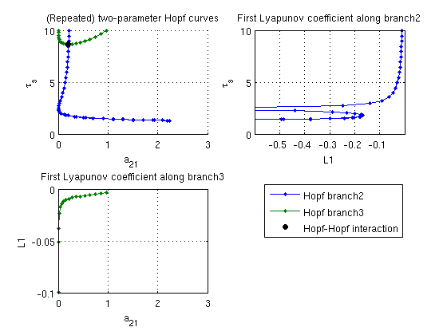
Periodic orbit continuation
The convenience function SetupPsol creates the initial branch of periodic orbits. Its first arguments are funcs, the Hopf or steady-state branch along which a Hopf bifurcation was detected, and the index of the Hopf point along the branch where one wants to branch off point. Important additional parameters:
- 'radius': amplitude of initial periodic orbit (default 1e-3),
- 'contpar': index of continuation parameter (otherwise taken from input branch),
- 'degree': degree of collocation polynomials (default 3)
- 'intervals': number of collocation intervals (default 20)
- 'hopfcorrection': apply Newton iteration to find correct Hopf point before branching off. This is recommended if the point provided is not of kind 'hopf'.
All other parameters are passed on to the resulting output branch of periodic orbits (here branch4). The parameter field of the output branch is inherited from the input branch (before optional parameters are taken into account).
[branch4,suc]=SetupPsol(funcs,branch1,indhopf,'degree',4,'intervals',40); branch4.parameter.max_step(1,:)=[ind_a21,0.1]; figure(2); clf; [branch4,s,f,r]=br_contn(funcs,branch4,50); % look at the period along the branch: a21_per=arrayfun(@(x)x.parameter(4),branch4.point); periods=[branch4.point.period]; figure(4); clf; plot(a21_per,periods,'b.-'); xlabel('a21'); ylabel('period');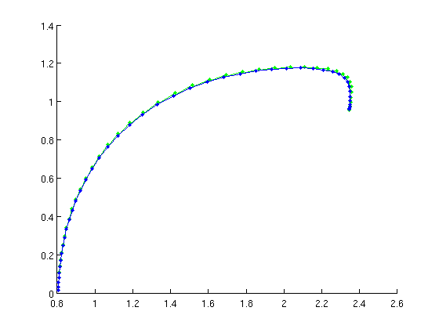 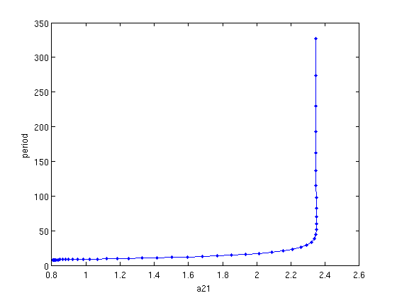
Figure: family of periodic orbits
Branch of periodic solutions emanating from a Hopf point. The branch turns at the far right.
Floquet multipliers of periodic orbits
The function GetStability can be used for periodic orbits as well.
[nunst_per,dom,trivdef_per,branch4.point]=GetStability(branch4,... 'funcs',funcs,'exclude_trivial',true); fprintf('Loss of stability at point %d\n',find(nunst_per,1,'first'));
Warning: Matrix is close to singular or badly scaled. Results may be inaccurate. RCOND = 2.009522e-18. Loss of stability at point 42
Continuation of folds of periodic orbits
See demo1_POfold.html for extensive explanation. find inital approximate fold
[dummy,indmax]=max(arrayfun(@(x)x.parameter(ind_a21),branch4.point)); % initialize problem functions and branch [foldfuncs,branch5]=SetupPOfold(funcs,branch4,indmax,'contpar',[ind_a21,ind_taus],... 'dir',ind_taus,'print_residual_info',1,'step',0.01,'plot_measure',[],... parbd{:}); % do not print residuals along branch branch5.method.point.print_residual_info=0; % continue branch figure(1); branch5=br_contn(foldfuncs,branch5,100); xlabel('a21');ylabel('tau_s'); title('Continuation of fold of periodic orbits'); % get the profile of the periodic orbits and compute their Floquet % multipliers and stability pf_orbits=foldfuncs.get_comp(branch5.point,'solution'); [nunst_pf,dom,triv_defect,pf_orbits]=GetStability(pf_orbits,'funcs',funcs,... 'exclude_trivial',true,'locate_trivial',@(x)[1,1]); fprintf('max number of unstable Floquet multipliers: %d\n',max(nunst_pf)); % plot the defect of the trivial Floquet multiplier as computed by % GetStability n_orbits=length(pf_orbits); figure(5); a21_pfold=arrayfun(@(x)x.parameter(ind_a21),branch5.point); taus_pfold=arrayfun(@(x)x.parameter(ind_taus),branch5.point); plot(1:n_orbits,triv_defect); xlabel('point number'); ylabel('defect of trivial Floquet multiplier'); title('Comparison of Floquet multiplier computation with extended system');
it=1, res=0.000616502 it=2, res=0.00872625 it=3, res=0.000152002 it=4, res=5.54573e-08 it=5, res=2.30907e-10 it=1, res=0.000362284 it=2, res=2.0391e-09 it=1, res=0.0699005 it=2, res=0.0147462 it=3, res=6.48903e-06 it=4, res=3.38845e-10 it=1, res=0.000255849 it=2, res=6.59513e-10 BR_CONTN warning: boundary hit. max number of unstable Floquet multipliers: 0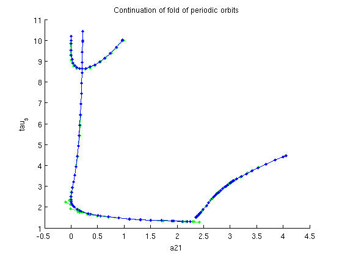 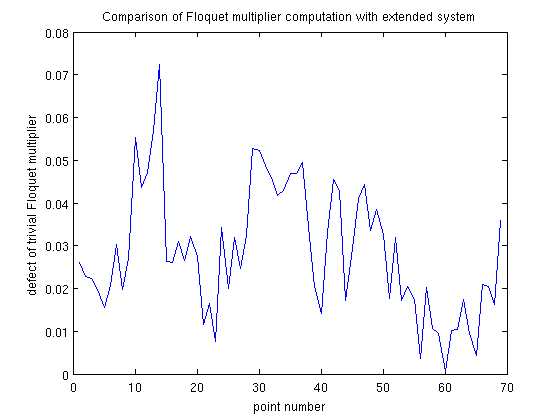
Add fold of periodic orbits to Two-parameter bifurcation diagram
figure(3); subplot(2,2,1); hold on ph_pfold=plot(a21_pfold,taus_pfold,'r.-'); lg_handles(end+1)=ph_pfold; lg_texts{end+1}='Fold of periodic orbits'; lh=legend(lg_handles,lg_texts); lc=get(lh,'position'); set(lh,'position',[0.9-lc(3),0.45-lc(4),lc(3:4)]) a21lim=get(gca,'xlim'); subplot(2,2,3); set(gca,'xlim',a21lim);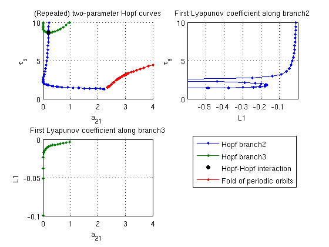
save data:
save('demo1_simple_results.mat');